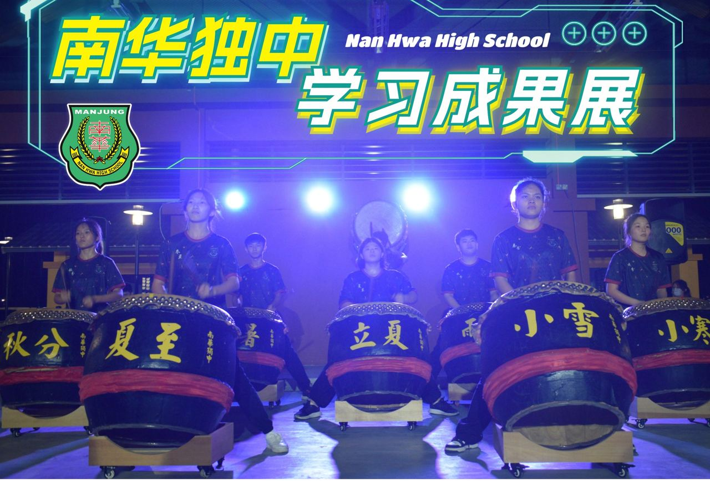
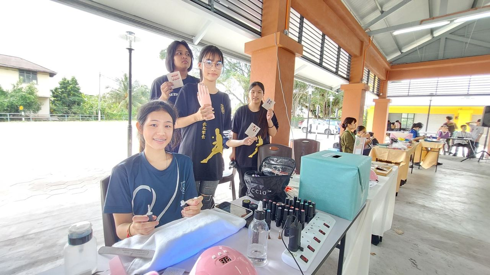
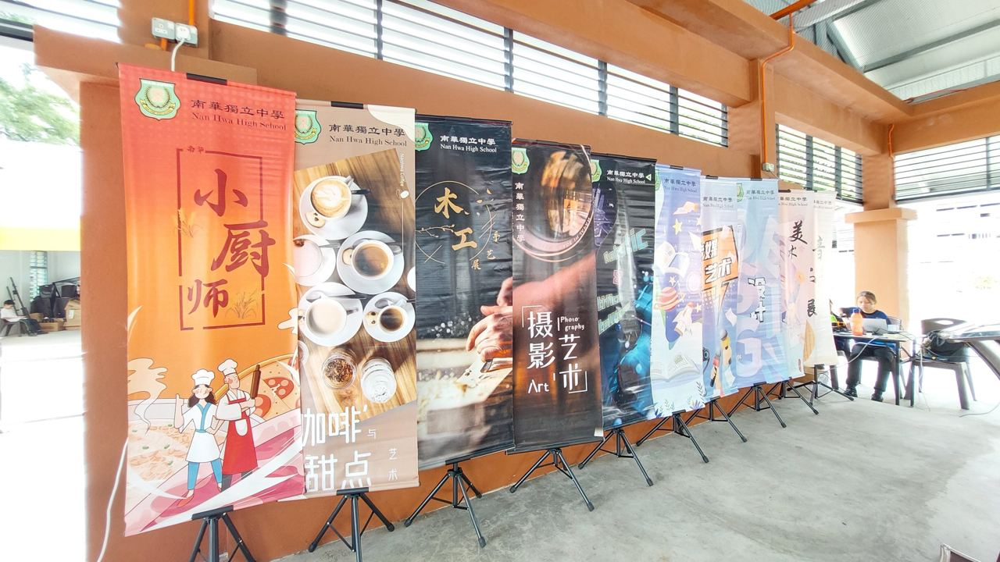
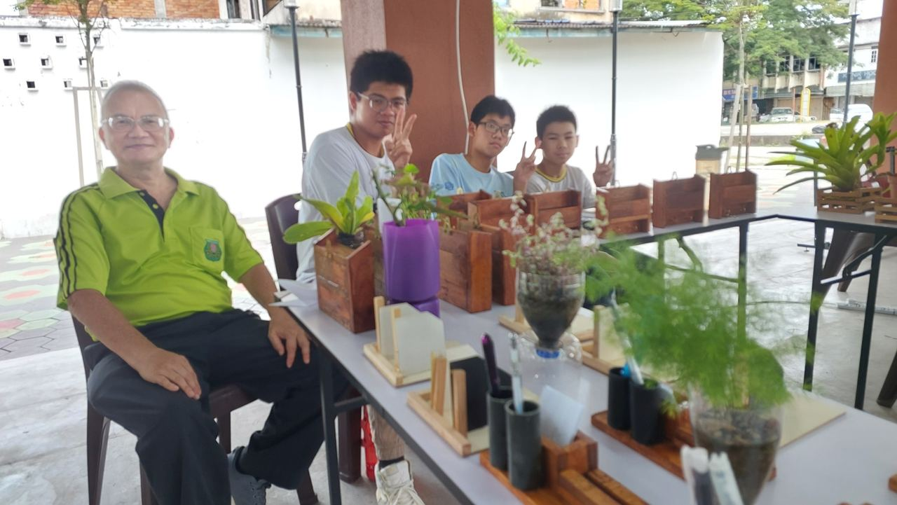
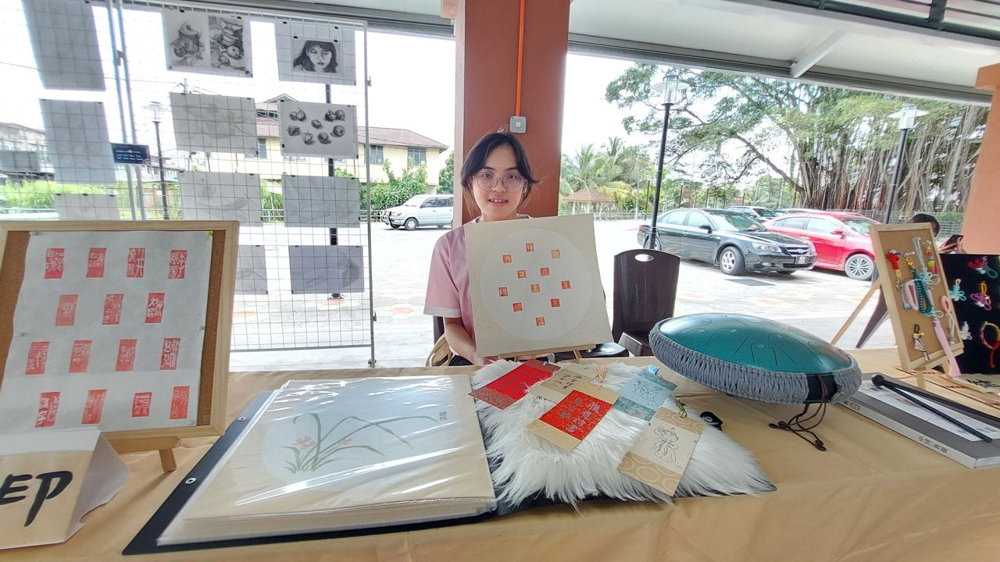
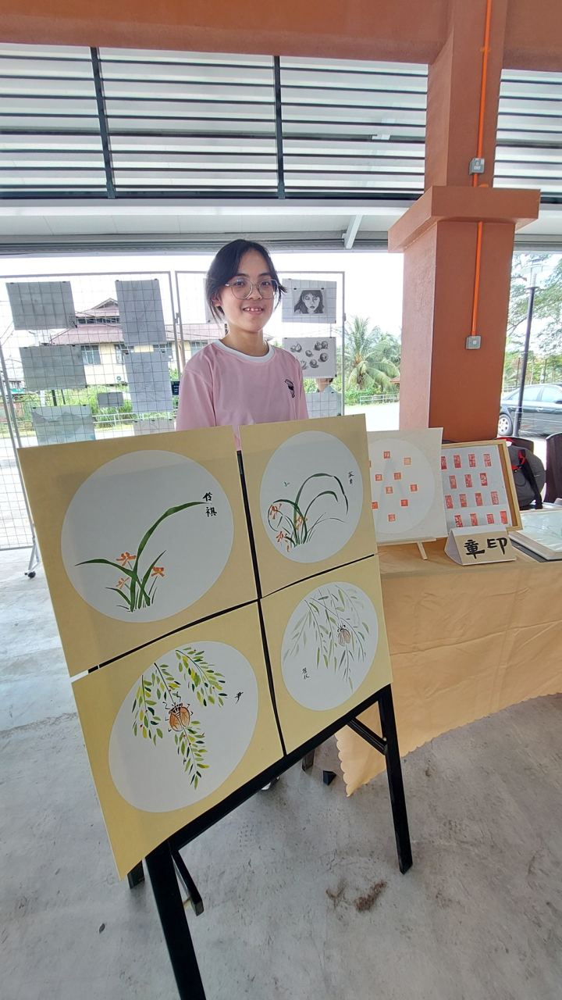
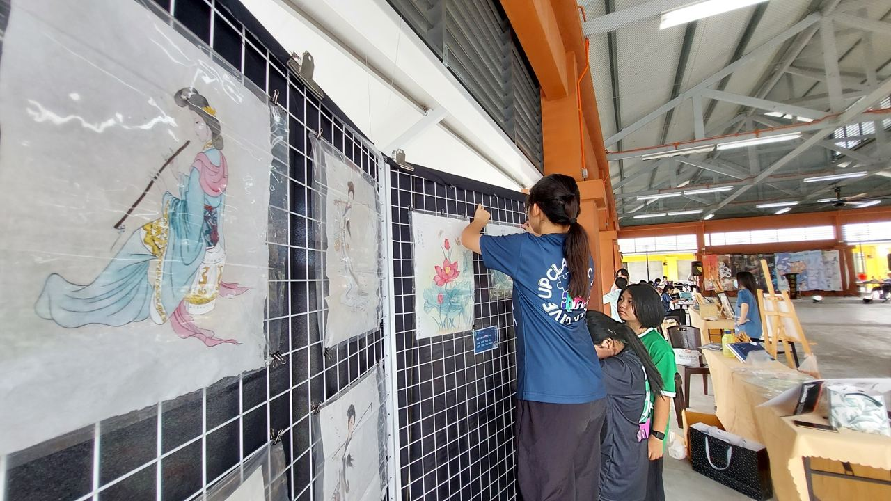
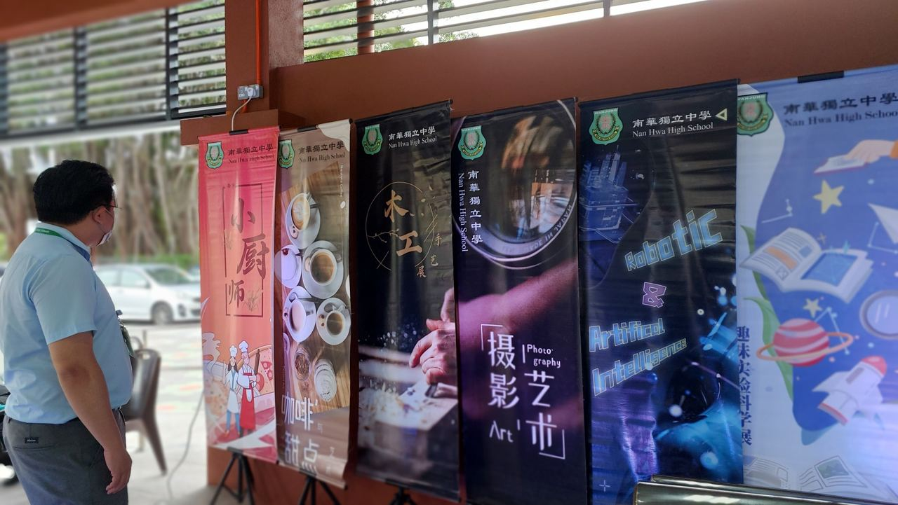

南华独中举办校外学习成果展
南华独中举办校外学习成果展
甘文阁社区文化中心现人潮
本校于12月1日至3日在甘文阁社区文化中心（旧巴刹）成功举办了一场别开生面的“南华独中学习成果展”。在这次展览中，学生们展示了在2023年期间在校本与选修课上所取得的丰硕学习成果。为期三天的活动吸引了众多参观者，其中第二天的联课成果表演更是成为亮点，南华独中的各大学会团体（包括华乐团、醒狮团、舞蹈团、管乐团与廿四节令鼓）展示了他们在联课学习中取得的显著成果。
“学习成果展”分为两大展区，即“校本成果展”和“技职成果展”。校本成果展包括有音乐展、趣味科学实验展、木工手艺展、简易机械展和美术成果展；而技职成果展则包括有咖啡与甜点艺术、小厨师、中华艺术展、摄影艺术展、美甲基础班、平面设计展、超轻黏土设计展以及工笔画.
阿斯达卡州议员YB黄天荣出席成果表演时致辞藉“风声雨声读书声声声入耳，家事国事天下事事事关心。”肯定了南华中学自1935年创立以来，经历改制、一路辛勤办校至今不但屹立不倒，而且越办越好。黄州议员表示，这次展览不仅仅是学生们辛勤努力的结晶，更是一个集体智慧的展现。每一件作品都是南华独中师生们的集体智慧的结晶，是无数小时的思考、实验和不懈努力的产物。
南华独中校长陈丽冰博士表示，自年初本校校本课程开展到高中选修课程的设置，经过老师们、孩子们不懈的努力，日夜奋战，建立于办学理念学会读书、学会做人的五大素养领域延伸出的18门初中校本课程6门高中选修课今日已成了许多国内外的大专院校，特地不远千里，远道而来参观拜访与取经的当代与未来教育趋势的学校。此学习成果展是为了展示孩子们的学习成果，期望学生能走出教室，走入社区，让学习更贴近生活，更贴近实际需求，迎接社会的挑战。
南华独中董事总务何添胜先生致辞中表示，本校董事会对于学校的硬 软体都投入了非常大的资源 ,尤其这两年在软硬体上有着质量上飞跃性的提升。在升学方面，本校也积极地寻找更多的资源让孩子毕业后可以有更多的出路 ，尤其是为成绩优越及家境清寒的学生开拓出国升造的机会，例如今年获得清华大学给予南华独中一份推荐名额 ，苏州科技大学的十个全免学位、天津大学结成姐妹校，经校长推荐保送入读华侨大学等等。何总务坚信，借由多方努力下，一定能栽培出优秀又快乐积极的下一代领导人。
#学习成果 #校本课程 #选修课程 #联课成果表演
#甘文阁 #社区文化中心 #旧巴刹
#南华独中 #曼绒 #实兆远







